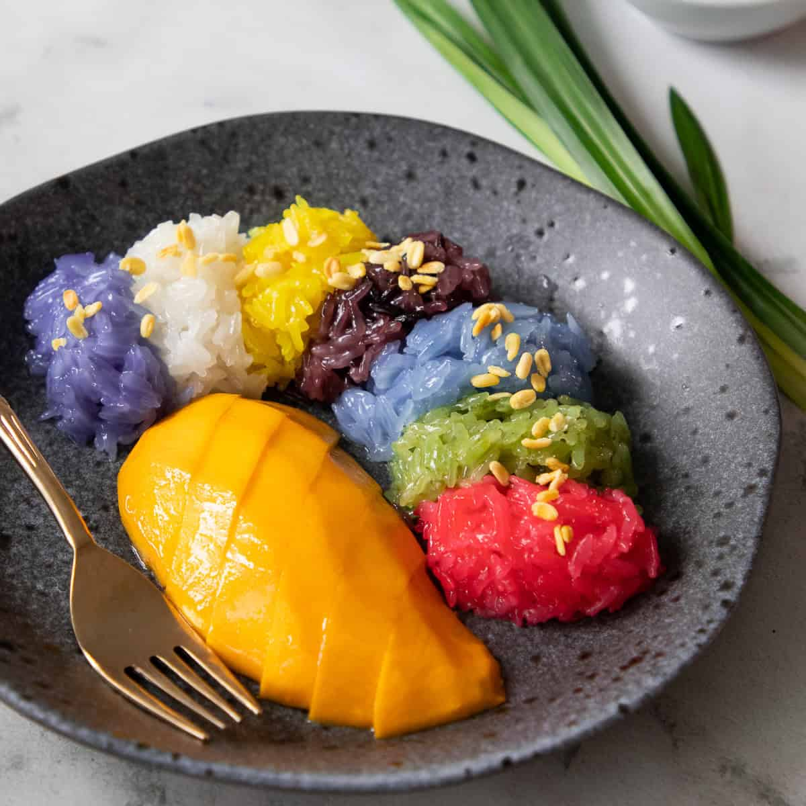

Rainbow Mango Sticky Rice
(kao niew mamuang ข้าวเหนียวมะม่วง)
What is Mango and Sticky Rice?
Mango sticky rice is a classic traditional Thai dessert, and in Thai it is called kao niew mamuang ข้าวเหนียวมะม่วง. Kao niew means sticky rice, and mamuang means mango. The sticky rice part of the dessert is made from white long grain glutinous rice that has been steamed and then macerated in a sweet coconut syrup. The rice is then topped with a salted coconut sauce and crispy mung beans.
Ingredient:
Coconut Sticky Rice
1. 210 g white glutinous rice
2. 160 ml coconut milk
3. 2.5 ml table salt
4. 100 g sugar
5. Sweetened condensed milk, optional
Salted Coconut Sauce
1. 5 ml rice flour
2. 120 ml coconut milk
3. 1.25 ml table salt
4. 115 ml of water
Others
1. 30 ml shelled and split mung beans
2. 3 sweet, ripe mangoes
Preparation Time:
20 minutes.
Preparation Time:
90 minutes.
Cooking Instructions:
Sweet Sticky Rice
1. Wash the rice by placing it in a mixing bowl and cover with cold water, then vigorously swish the rice with your hand to release loose starch. Pour off the cloudy water and repeat the process 4 more times or until the water runs mostly clear.
2. Soak the rice with room temp water for at least 4 hours and up to overnight. If you're using naturally dyed water to soak the rice, refrigerate the rice after 4 hours of soaking if you're not yet ready to steam. While the rice is soaking, make the salted coconut sauce and the crispy mung beans (below). Note: There are 2 ways to colour the sticky rice: colour the soaking water OR colour the coconut syrup. If using natural dyes, it is easier to add the colour to the water than to the coconut syrup, because colours have a hard time infusing into fatty liquid. If using food colouring, then it will be easier to just stir a few drops into the coconut syrup.
3. Drain the rice very well, shaking off excess water in a sieve until there is no more dripping. Line a steamer rack with moist muslin (not soaking wet!) or a thin white tea towel and place the rice on the cloth. Fold the edges of the cloth over the rice, making sure the rice doesn't cover the entire rack - there should be space around the rice to allow steam to come up.
4. Steam the rice for 20-25 minutes over boiling water. Make sure the rice doesn't cover the entire rack - there should be space around the rice to allow the steam to come up.
5. Prepare the coconut syrup. In a pot, combine the coconut milk, sugar, salt; and if you have a pandan leaf handy you can throw it in as well. Cook it over medium high heat, and at the first sign of bubbling, turn off the heat and keep covered until the rice is done. Do not let this syrup reduce.
6. Macerate the rice. Shortly before the sticky rice is done, reheat the syrup back up so it is piping hot. When the rice is done, immediately place it into a mixing bowl and pour the hot syrup over the rice. Stir to break up any lumps, then cover with a lid, a plate, or aluminum foil and let sit for 20 minutes. It's very important both the rice AND the syrup are very hot to ensure proper absorption.
7. After 20 minutes, fold the bottom of the rice up to the top to help redistribute the liquid, and let sit for at least another 20 minutes or until ready to serve. The rice should've absorbed all the liquid and looks plump and shiny, but not mushy. There should be no pooling liquid remaining.
For the salted coconut sauce
1. Stir the rice flour into the water until there are no more lumps.
2. Combine the rice flour slurry, coconut milk, and salt in a small pot. Cook over medium high heat, stirring constantly, until the mixture comes to a boil. Remove from heat and pour into a bowl. Let cool completely before serving.
For the crispy mung beans:
1. Rinse the beans in cold water and add them to a small pot and cover with about 2 cups of water.
2. Over medium heat, bring the water to a simmer. Once simmering, immediately remove from the heat and cover the pot for 10 minutes ONLY. Do not over-soak.
3. Drain off the cooking water and rinse the beans in cold water. Lay the beans on a paper towel to dry.
4. In a lightly greased sauté pan, toast the beans over medium high heat, stirring frequently until the beans are dry, crunchy and start developing a light golden colour.
5. Let cool on a plate. This can be kept in an airtight container for up to 1 month.
Assembly:
1. Serve the rice beside sweet, fresh cut mangoes. Spoon some salted coconut sauce over the rice and sprinkle with the crispy mung beans.
2. Drizzle condensed milk over top and serve right away.
<-- Click on the links at the side to view the recipes!